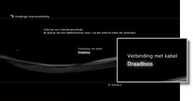
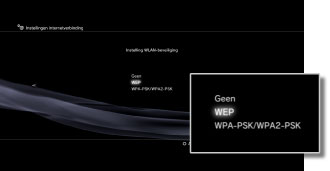
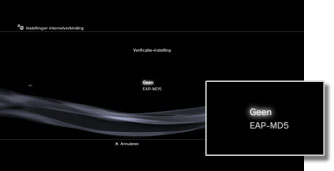
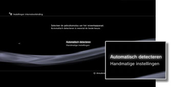
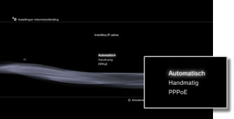
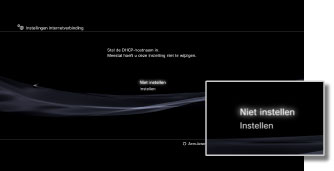
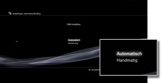
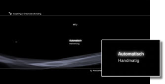
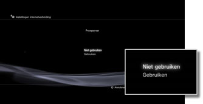
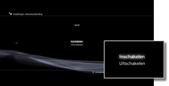

Instellingen > Netwerkinstellingen > Instellingen internetverbinding (geavanceerde instellingen)
Instellingen internetverbinding (geavanceerde instellingen)
Wijzig de nodige instellingen als u met de basisinstellingen geen internetverbinding kunt maken. Pas elk item aan volgens uw specifieke netwerkomgeving.
1. |
Selecteer |
|---|---|
2. |
Selecteer [Instellingen internetverbinding]. |
3. |
Selecteer [Aangepast]. |
 (Instellingen) >
(Instellingen) >  (Netwerkinstellingen).
(Netwerkinstellingen).Verbindingsmethode
De methode voor de internetverbinding instellen. Deze instelling is enkel beschikbaar op PS3™-systemen die uitgerust zijn met de draadloze LAN-functie.

| Verbinding met kabel | Maak een verbinding met kabel door middel van een Ethernet-kabel |
|---|---|
| Draadloos | Maak een draadloze verbinding door middel van een draadloos LAN |
WLAN-instellingen
De SSID voor het toegangspunt instellen. Deze instelling is enkel beschikbaar op PS3™-systemen die met de functie draadloos LAN zijn uitgerust.
| Scannen | Naar een toegangspunt in de buurt scannen. Selecteer deze instelling als u de SSID van het toegangspunt niet kent. Het systeem zal toegangspunten in de buurt detecteren en informatie over de SSID en beveiligingsinstellingen weergeven. |
|---|---|
| Handmatig invoeren | Bepaal het toegangspunt door de SSID handmatig in te voeren met een toetsenbord. Selecteer deze instelling als u de SSID kent. |
| Automatisch | Gebruik de functie automatische instellingen van het toegangspunt. Deze instelling is enkel beschikbaar in regio's waar PS3™-systemen worden verkocht die met deze functie zijn uitgerust. Selecteer deze instelling als u een toegangspunt gebruikt dat automatische setup ondersteunt. Volg de instructies op het scherm. |
Instelling WLAN-beveiliging
Een coderingssleutel voor een toegangspunt instellen. Deze instelling is enkel beschikbaar op PS3™-systemen die met de functie draadloos LAN zijn uitgerust.

| Geen | Geen coderingssleutel instellen. |
|---|---|
| WEP | Een coderingssleutel instellen. De coderingssleutel kan op het volgende scherm worden ingevoerd. De coderingssleutel wordt als een reeks van asterisks weergegeven. |
| WPA-PSK / WPA2-PSK |
Verificatie-instelling
Deze instellingen zijn enkel beschikbaar op PS3™-systemen die in Korea worden verkocht en enkel op PS3™-systemen die met de functie draadloos LAN zijn uitgerust.

| Geen | Geen verificatie-informatie instellen. |
|---|---|
| EAP-MD5 | Verificatie-informatie instellen bij gebruik van openbare WLAN-diensten. Voer uw gebruikersidentiteit en wachtwoord in op het volgende scherm. Raadpleeg voor meer informatie de gegevens die door de provider van de openbare WLAN-dienst worden verschaft. |
Ethernet-gebruiksmodus
De overdrachtsnelheid en gebruiksmethode voor overdracht van data via ethernet instellen. Selecteer gewoonlijk [Automatisch detecteren].

| Automatisch detecteren | Automatisch basisinstellingen bepalen. |
|---|---|
| Handmatige instellingen | De overdrachtsnelheid en gebruiksmethode voor overdracht van data via ethernet handmatig instellen. |
Instelling IP-adres
De methode voor het verkrijgen van een IP-adres instellen bij het maken van een verbinding met het internet.

| Automatisch | Gebruik het IP-adres dat door de DHCP-server werd toegewezen. U kunt de hostnaam van de DHCP-server op het volgende scherm invoeren. |
|---|---|
| Handmatig | Het IP-adres handmatig instellen. U kunt waarden voor IP-adres, subnetmasker, standaardrouter en primaire en secundaire DNS invoeren op het volgende scherm. |
| PPPoE | Verbinding met het internet maken met behulp van PPPoE. U kunt uw gebruikersidentiteit en wachtwoord op het volgende scherm invoeren. |
DHCP
Stel de DHCP-hostnaam in. Selecteer doorgaans [Niet instellen].

| Niet instellen | Stel de DHCP-hostnaam niet in. |
|---|---|
| Instellen | Stel de DHCP-hostnaam in. |
DNS-instelling
De DNS-server instellen.

| Automatisch | Automatisch het adres van de DNS-server verkrijgen. |
|---|---|
| Handmatig | Handmatig het adres van de DNS-server invoeren. |
MTU
Configureer de MTU-waarde die bij het overbrengen van data wordt gebruikt. Selecteer gewoonlijk [Automatisch].

| Automatisch | Automatisch de MTU-waarde instellen. |
|---|---|
| Handmatig | De maximale grootte van datapakketten (in bytes) bepalen die in één overdracht kan worden verstuurd. |
Proxyserver
De proxyserver instellen die moet worden gebruikt.

| Niet gebruiken | Geen proxyserver gebruiken. |
|---|---|
| Gebruiken | Een proxyserver gebruiken. U kunt het adres en het poortnummer van de proxyserver op het volgende scherm invoeren. |
UPnP
Stel deze optie in om UPnP (Universal Plug and Play) in of uit te schakelen.

| Inschakelen | UPnP inschakelen. |
|---|---|
| Uitschakelen | UPnP uitschakelen. |
Opmerking
Als de optie is ingesteld op [Uitschakelen], dan wordt de communicatie met anderen mogelijk beperkt als u de functie stem-/videochat of communicatiefuncties van games gebruikt.